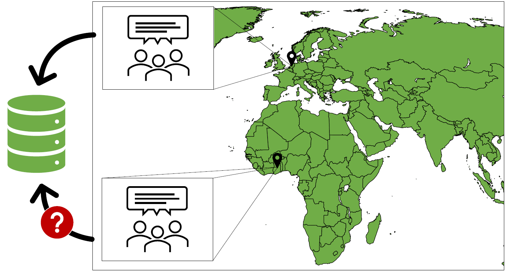
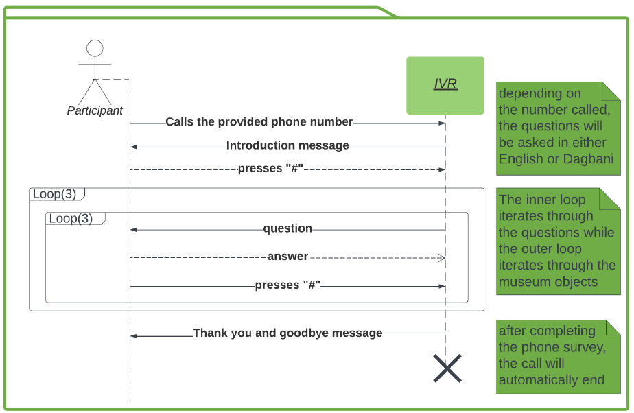

Crowdsourcing without internet
- How to include the knowledge of people without Internet access in our databases?
Our Solution: Interactive Voice response
Instead of relying on the Internet to interact with communities that have expert knowledge in a specific field, we propose a voice-based interface using the telecommunication network.
The number of mobile connections observed by the Digital 2022 report on Ghana suggests that the large majority of the population is actively using the telecommunication network, even in rural communities.
About the Project
The aim of this project is to use crowdsourcing techniques to tag objects from the colonial period exhibited in Dutch museums. We created a. IVR (Interactive Voice Response) system to gather information about colonial heritage objects that are originally from Ghana, and that are now exhibited in the Wereldculturen Collectie. We are using the Twilio platfrom, which offers a Voice API to create a personalized voice interface.
The IVR system developed in this project allows participants to answer questions about selected objects through a voice interface. The goal is to extract information about these objects and create a polyvocal dataset.
Find the Repository here
Features:
- Option to use Twilio services or self-employ
- Easy navigation
- Accessible content for users with varying levels of literacy
Selected objects
Object 1: Drum

Object 2: Kuduo Pot

Object 3: Fertility doll
Contact information
Find all the code at this Github repository
If you have any questions or would like to get in touch, please feel free to reach out:
- Email: n.maronic@gmail.com
- LinkedIn: Naomi Maronic